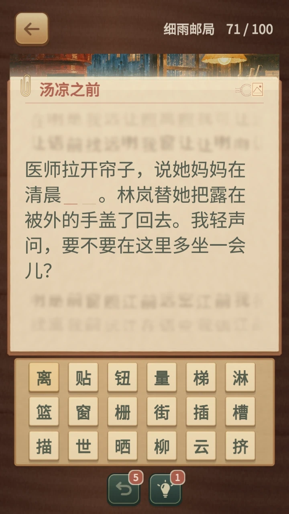
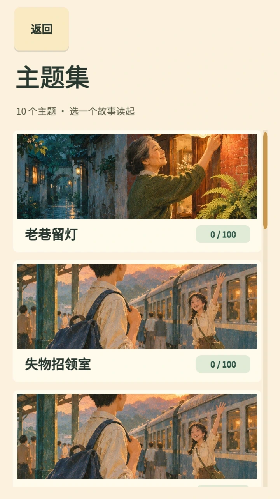

竖屏文字解谜 / 书信叙事
为你赋诗.
用候选字补完来信，跟随四幕主线和配乐读完两位主角的一生，再翻开十个独立主题。
Unity · 微信小游戏测试包 0.4.2
一百封主线来信，四段人生
校园、青春、中年和晚年各用二十五封信推进。目录把来信每十封分组，方便继续或回读。四幕分别有一首原创循环曲，换幕时平滑过渡。


先读一封信，再决定去哪个主题
前十封介绍选字、纠错和提示，第十封完成后开放主题集。主线 100 关与十个百关主题共 1,100 关，后期题目增加候选字。0.4.2 已完成本地题库和微信测试包核验，手机真机验证待完成。



